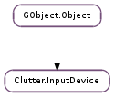

| get_associated_device() | |
| get_axis(index_) | |
| get_axis_value(axes, axis) | |
| get_coords(sequence) | |
| get_device_coords() | |
| get_device_id() | |
| get_device_mode() | |
| get_device_name() | |
| get_device_type() | |
| get_enabled() | |
| get_grabbed_actor() | |
| get_has_cursor() | |
| get_key(index_) | |
| get_n_axes() | |
| get_n_keys() | |
| get_pointer_actor() | |
| get_pointer_stage() | |
| get_slave_devices() | |
| grab(actor) | |
| keycode_to_evdev(hardware_keycode, evdev_keycode) | |
| sequence_get_grabbed_actor(sequence) | |
| sequence_grab(sequence, actor) | |
| sequence_ungrab(sequence) | |
| set_enabled(enabled) | |
| set_key(index_, keyval, modifiers) | |
| ungrab() | |
| update_from_event(event, update_stage) |
| Name | Type | Flags | Description |
|---|---|---|---|
| backend | Clutter.Backend | r/w/c | The backend instance |
| device-manager | Clutter.DeviceManager | r/w/c | The device manager instance |
| device-mode | Clutter.InputMode | r/w/c | The mode of the device |
| device-type | Clutter.InputDeviceType | r/w/c | The type of the device |
| enabled | bool | r/w | Whether the device is enabled |
| has-cursor | bool | r/w/c | Whether the device has a cursor |
| id | int | r/w/c | Unique identifier of the device |
| n-axes | int | r | The number of axes on the device |
| name | str | r/w/c | The name of the device |
None
Bases: GObject.Object
Generic representation of an input device. The actual contents of this structure depend on the backend used.
| Returns: | a Clutter.InputDevice, or None |
|---|---|
| Return type: | Clutter.InputDevice |
Retrieves a pointer to the Clutter.InputDevice that has been associated to device.
If the Clutter.InputDevice :device-mode property of device is set to Clutter.InputMode.MASTER, this function will return None.
| Parameters: | index_ (int) – the index of the axis |
|---|---|
| Returns: | the axis type |
| Return type: | Clutter.InputAxis |
Retrieves the type of axis on device at the given index.
| Parameters: |
|
|---|---|
| Returns: | |
| Return type: | bool, value: float |
Extracts the value of the given axis of a Clutter.InputDevice from an array of axis values.
An example of typical usage for this function is:
ClutterInputDevice *device = clutter_event_get_device (event);
gdouble *axes = clutter_event_get_axes (event, NULL);
gdouble pressure_value = 0;
clutter_input_device_get_axis_value (device, axes,
CLUTTER_INPUT_AXIS_PRESSURE,
&pressure_value);
| Parameters: | sequence (Clutter.EventSequence or None) – a Clutter.EventSequence, or None if the device is not touch-based |
|---|---|
| Returns: | False if the device’s sequence hasn’t been found, and True otherwise. |
| Return type: | bool, point: Clutter.Point |
Retrieves the latest coordinates of a pointer or touch point of device.
| Return type: | x: int, y: int |
|---|
Retrieves the latest coordinates of the pointer of device
| Returns: | the identifier of the device |
|---|---|
| Return type: | int |
Retrieves the unique identifier of device
| Returns: | the device mode |
|---|---|
| Return type: | Clutter.InputMode |
Retrieves the Clutter.InputMode of device.
| Returns: | the name of the device, or None. The returned string is owned by the Clutter.InputDevice and should never be modified or freed |
|---|---|
| Return type: | str |
Retrieves the name of the device
| Returns: | the type of the device |
|---|---|
| Return type: | Clutter.InputDeviceType |
Retrieves the type of device
| Returns: | True if the device is enabled |
|---|---|
| Return type: | bool |
Retrieves whether device is enabled.
| Returns: | a Clutter.Actor, or None |
|---|---|
| Return type: | Clutter.Actor |
Retrieves a pointer to the Clutter.Actor currently grabbing all the events coming from device.
| Returns: | True if the device has a cursor |
|---|---|
| Return type: | bool |
Retrieves whether device has a pointer that follows the device motion.
| Parameters: | index_ (int) – the index of the key |
|---|---|
| Returns: | True if a key was set at the given index |
| Return type: | bool, keyval: int, modifiers: Clutter.ModifierType |
Retrieves the key set using Clutter.InputDevice.set_key ()
| Returns: | the number of axes on the device |
|---|---|
| Return type: | int |
Retrieves the number of axes available on device.
| Returns: | the number of registered keys |
|---|---|
| Return type: | int |
Retrieves the number of keys registered for device.
| Returns: | a pointer to the Clutter.Actor or None |
|---|---|
| Return type: | Clutter.Actor |
Retrieves the Clutter.Actor underneath the pointer of device
| Returns: | a pointer to the Clutter.Stage or None |
|---|---|
| Return type: | Clutter.Stage |
Retrieves the Clutter.Stage underneath the pointer of device
| Returns: | a list of Clutter.InputDevice, or None. The contents of the list are owned by the device. Use GLib.List.free () when done |
|---|---|
| Return type: | [Clutter.InputDevice] |
Retrieves the slave devices attached to device.
| Parameters: | actor (Clutter.Actor) – a Clutter.Actor |
|---|
Acquires a grab on actor for the given device.
Any event coming from device will be delivered to actor, bypassing the usual event delivery mechanism, until the grab is released by calling Clutter.InputDevice.ungrab ().
The grab is client-side: even if the windowing system used by the Clutter backend has the concept of “device grabs”, Clutter will not use them.
Only Clutter.InputDevice of types Clutter.InputDeviceType.POINTER_DEVICE and Clutter.InputDeviceType.KEYBOARD_DEVICE can hold a grab.
| Parameters: |
|
|---|---|
| Returns: | |
| Return type: |
Translates a hardware keycode from a Clutter.KeyEvent to the equivalent evdev keycode. Note that depending on the input backend used by Clutter this function can fail if there is no obvious mapping between the key codes. The hardware keycode can be taken from the Clutter.KeyEvent.hardware_keycode member of Clutter.KeyEvent.
| Parameters: | sequence (Clutter.EventSequence) – a Clutter.EventSequence |
|---|---|
| Returns: | a Clutter.Actor, or None |
| Return type: | Clutter.Actor |
Retrieves a pointer to the Clutter.Actor currently grabbing the touch events coming from device given the sequence.
| Parameters: |
|
|---|
Acquires a grab on actor for the given device and the given touch sequence.
Any touch event coming from device and from sequence will be delivered to actor, bypassing the usual event delivery mechanism, until the grab is released by calling Clutter.InputDevice.sequence_ungrab ().
The grab is client-side: even if the windowing system used by the Clutter backend has the concept of “device grabs”, Clutter will not use them.
| Parameters: | sequence (Clutter.EventSequence) – a Clutter.EventSequence |
|---|
Releases the grab on the device for the given sequence, if one is in place.
| Parameters: | enabled (bool) – True to enable the device |
|---|
Enables or disables a Clutter.InputDevice.
Only devices with a Clutter.InputDevice :device-mode property set to Clutter.InputMode.SLAVE or Clutter.InputMode.FLOATING can be disabled.
| Parameters: |
|
|---|
Sets the keyval and modifiers at the given index_ for device.
Clutter will use the keyval and modifiers set when filling out an event coming from the same input device.
Releases the grab on the device, if one is in place.
| Parameters: |
|
|---|
Forcibly updates the state of the device using a Clutter.Event
This function should never be used by applications: it is meant for integration with embedding toolkits, like clutter-gtk
Embedding toolkits that disable the event collection inside Clutter need to use this function to update the state of input devices depending on a Clutter.Event that they are going to submit to the event handling code in Clutter though Clutter.do_event (). Since the input devices hold the state that is going to be used to fill in fields like the Clutter.ButtonEvent click count, or to emit synthesized events like Clutter.EventType.ENTER and Clutter.EventType.LEAVE, it is necessary for embedding toolkits to also be responsible of updating the input device state.
For instance, this might be the code to translate an embedding toolkit native motion notification into a Clutter Clutter.MotionEvent and ask Clutter to process it:
ClutterEvent c_event;
translate_native_event_to_clutter (native_event, &c_event);
clutter_do_event (&c_event);
Before letting Clutter.do_event () process the event, it is necessary to call Clutter.InputDevice.update_from_event ():
ClutterEvent c_event;
ClutterDeviceManager *manager;
ClutterInputDevice *device;
translate_native_event_to_clutter (native_event, &c_event);
/* get the device manager */
manager = clutter_device_manager_get_default ();
/* use the default Core Pointer that Clutter
* backends register by default
*/
device = clutter_device_manager_get_core_device (manager, %CLUTTER_POINTER_DEVICE);
/* update the state of the input device */
clutter_input_device_update_from_event (device, &c_event, FALSE);
clutter_do_event (&c_event);
The update_stage boolean argument should be used when the input device enters and leaves a Clutter.Stage ; it will use the Clutter.Stage field of the passed event to update the stage associated to the input device.